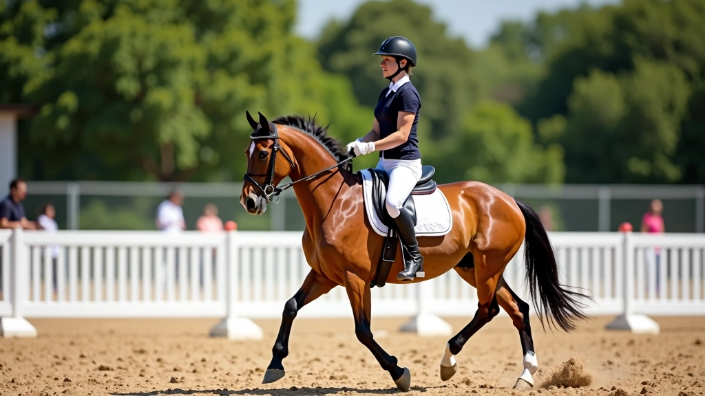
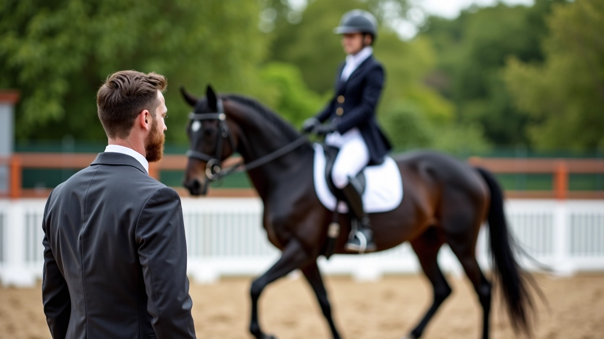
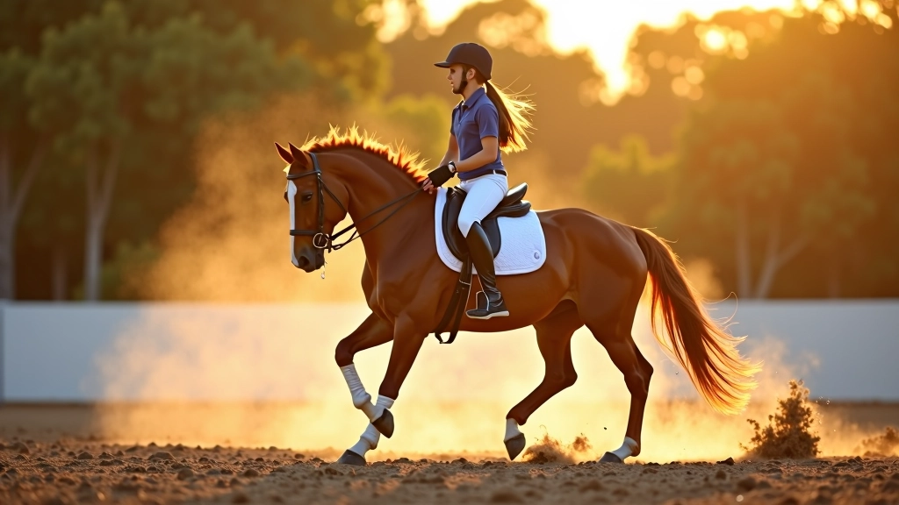
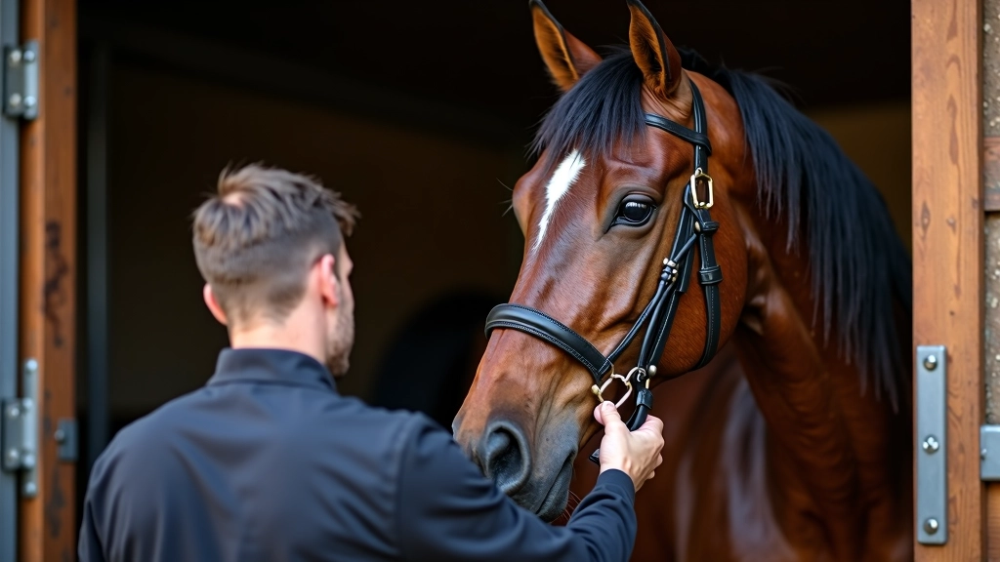

تحليل الأخطاء الشائعة
تعرّف على الأخطاء التي يقع فيها معظم الفرسان عند تعليم الخيل تغيير القدم، وكيفية تصحيحها بشكل فعّال
9 دقائق
•
جميع المستويات
•
سبتمبر 2026

لماذا من المهم فهم هذه الأخطاء
تغيير القدم في العدو من أصعب المهارات التي يتعلمها الفارس والحصان معاً. والمشكلة أنّ معظم الأخطاء تحدث في البداية، عندما يكون التصحيح أسهل. إذا تركت هذه الأخطاء دون معالجة، ستصبح عادات سيئة يصعب كسرها لاحقاً.
في هذا الدليل، نحلل الأخطاء الأكثر شيوعاً التي نراها في الحلبة. كل خطأ له سبب محدد، وكل سبب له حل عملي. سواء كنت مبتدئاً أم لديك سنوات من الخبرة، ستجد معلومات تساعدك على التقدم بشكل أسرع.
الخطأ الأول: عدم الاستعداد الكافي قبل الطلب
معظم الفرسان يحاولون طلب تغيير القدم مباشرة دون تحضير الحصان بشكل صحيح. الحصان يحتاج إلى الشعور بتوازنك، وتقبل الإشارات، والثقة بك قبل محاولة مهارة معقدة.
الحل؟ ابدأ بتمارين التحضير الأساسية. تحكم بالعدو من خلال السيقان والجسم قبل أن تستخدم يديك. علّم الحصان الاستجابة السريعة للإشارات الخفيفة. معظم الفرسان الناجحين يقضون 3 إلى 5 دقائق في التحضير قبل أي محاولة لتغيير القدم.
- حافظ على توازن الحصان في العدو المتوازن
- تأكد من استجابة الحصان لضغط الساق الخفيف
- قلل السرعة قليلاً — الحصان المتسارع لا يستطيع التركيز
- أرِح الحصان بين المحاولات


الخطأ الثاني: استخدام اليد بدلاً من السيقان
هذا الخطأ يحدث كل يوم في الحلبات. الفارس يسحب على اللجام بدلاً من استخدام الساق الخارجية لطلب التغيير. النتيجة؟ حصان يقاوم، ويفقد توازنه، وربما يرفض التغيير تماماً.
تغيير القدم ينبغي أن ينشأ من الجسم والساقين — ليس من يديك. يدك تعطي الاتجاه فقط. ساقك الخارجية هي التي تطلب الخطوة الجديدة. فكّر في الأمر هكذا: إذا كان الحصان يتجاهل ساقك، فإنه سيتجاهل يدك أيضاً.
النقطة الرئيسية: الضغط بالساق الخارجية يأتي قبل أي تعديل على اللجام. إذا كنت تسحب على اللجام أولاً، فأنت تفعل الخطأ بالفعل.
الخطأ الثالث: عدم الصبر على نتائج التدريب
الفرسان المبتدئون يتوقعون أن يتعلم الحصان تغيير القدم في أسبوع أو اثنين. في الواقع، معظم الخيل تحتاج إلى 4 إلى 6 أسابيع من التدريب المنتظم قبل إتقان المهارة. بعض الخيل تحتاج إلى وقت أطول.
التدريب المتسرع يؤدي إلى حصان مرتبك وفارس محبط. الحل هو بناء المهارة خطوة تلو الأخرى. في الأسبوع الأول، ركّز على التحضير فقط. في الأسبوع الثاني، أضف محاولات خفيفة. وهكذا دواليك.
الأسابيع 1-2
التحضير والتوازن فقط
الأسابيع 3-4
محاولات خفيفة بدون ضغط
الأسابيع 5-6
تحسين الاستجابة والتناسق


الخطأ الرابع: تجاهل حالة الحصان الجسدية
حصان متعب أو ضعيف العضلات لن يستطيع تغيير قدميه بشكل صحيح. الكثير من الفرسان يحاولون تدريب تقنية معقدة على حصان لم يحصل على اللياقة البدنية الأساسية. هذا مثل محاولة تعليم شخص غير لائق حركة باليه معقدة.
تأكد من أن حصانك يتمتع بصحة جيدة قبل البدء. قوي العضلات من خلال عمل منتظم — 3 إلى 5 جلسات تدريب في الأسبوع. لاحظ أي علامات للعرج أو الألم. إذا لم تكن متأكداً، استشر الطبيب البيطري.
ملاحظة مهمة
نتائج التدريب تختلف من حصان إلى آخر. كل حيوان له احتياجاته الخاصة وسرعة تعلمه. المعلومات في هذا الدليل مخصصة لأغراض تعليمية. إذا واجهت مشاكل صحية أو سلوكية مع حصانك، يُنصح باستشارة مدرب محترف أو طبيب بيطري متخصص.
الخطوة التالية
تجنب هذه الأربعة أخطاء الشائعة وستكون في طريق النجاح مع تدريب تغيير القدم. تذكّر أن الصبر والاتساق هما المفتاح. كل جلسة تدريب فرصة للتعلم، سواء كانت ناجحة أم لا. شاهد حصانك، استمع إلى ردود أفعاله، وعدّل طريقتك حسب الحاجة.
إذا كنت تريد معرفة المزيد عن تقنيات التدريب المتقدمة أو البرنامج الشامل لـ 8 أسابيع، استكشف موارد أكاديمية الأهرام للفروسية الأخرى.

فريق أكاديمية الأهرام للفروسية التحرير
فريق التحرير والمحتوى
كتبه فريق تحرير أكاديمية الأهرام للفروسية، متخصص في تقديم إرشادات عملية وموثوقة حول تدريب الخيل. نحن نجمع الخبرة الفعلية مع المعرفة العملية لإنتاج مقالات مفيدة وقابلة للتطبيق.